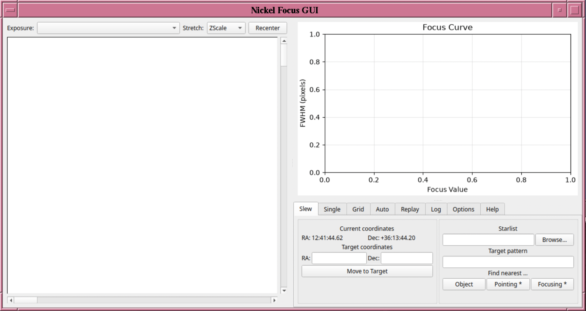
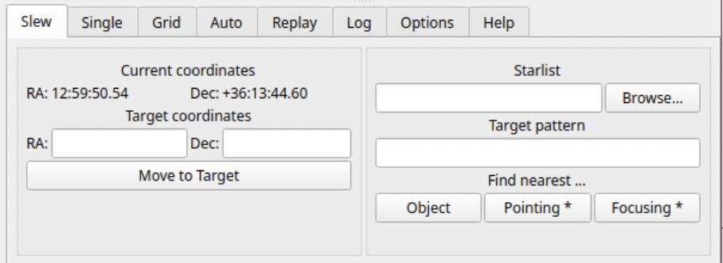
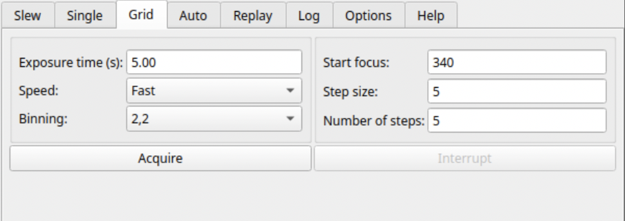
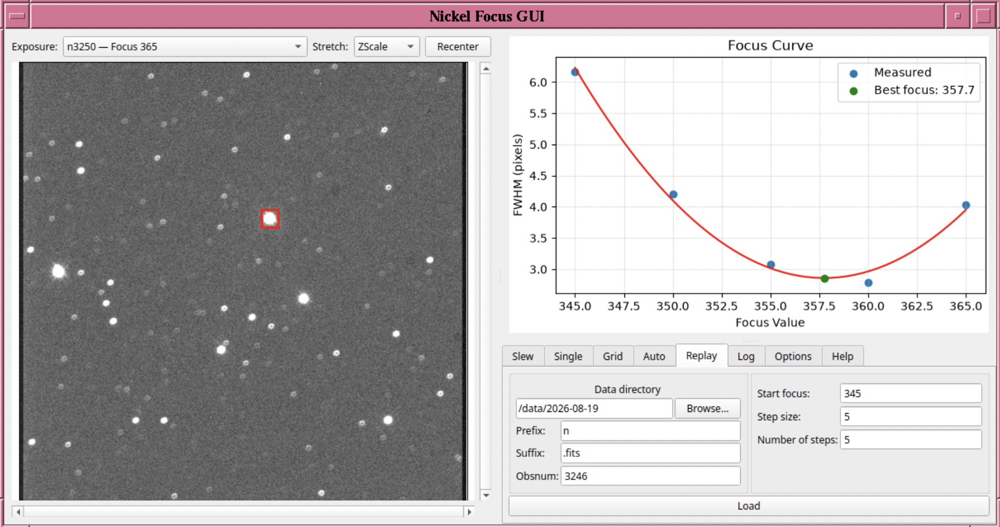

The Nickel Focus GUI automates the setup of the Nickel telescope for collecting imaging. The GUI allows you to slew the telescope, check and adjust the pointing model, and perform a focus sequence. This document gives a brief description of the workflow and how to use the GUI.
Starting the Focus GUI
To start the software from the observing computer, select it from the observer dropdown menu or type the command nickelfocus in a terminal on nandor.

The window has three panels. The observed image will be displayed on the left, the focus curve (FWHM versus focus value) is at the upper right, and all control options are organized into a set of tabs at the lower right.
The Focus GUI is meant to be self contained. Adjustments made by other GUIs (e.g., to the focus value or exposure time) will also affect the values used by the Focus GUI, but it is intended to be used in isolation. When the Focus GUI is in the model of a process (like performing a focus sequence or moving the telescope), functionality that would interrupt that process (like starting a second sequence) will be disabled.
The GUI connects to the telescope and camera through KTL. The row of colored symbols next to the "Quit" button indicate the status of various connections.
- Slew: Movement must be enabled to slew the telescope.
- Track: Tracking must be on to acquire a new target.
- On Target: Indicates that the telescope has successfully acquired the target.
- Focus: Displays the current focus value and whether or not the requested focus value has been achieved.
- Exp: Indicates if an exposure is in progress.
The Help tab provides quick reference information for each tab and its functionality.
General workflow
A general workflow for setting up the telescope for observations using the Focus GUI is as follows:
- Use the Slew Tab to move the telescope to an object that will be used to check the pointing. This will typically be a pointing star.
- Use the Single Tab to acquire an image of the field once the telescope is done slewing. Click the "Use current focus" button to set the focus (or enter a different value) and click the "Acquire" button to take the image.
- When the image is displayed, mark the targeted source by typing 'p' with your mouse over the star. This will mark the source in cyan and calculate the telescope offsets needed to center it in the field.
- Return to the Slew Tab and click "Offset by ..." to apply the offsets.
- Return to the Single Tab and take another image to confirm the target is centered.
- (Optional) If the source used for the pointing check is not suitable
to measure focus:
- Use the Slew Tab to acquire a source to use for focusing. This will typically be a focusing star.
- Use the Single Tab to take an image of the source to ensure it has been correctly acquired.
- Start a focus sequence using either the Grid Tab or the Auto Tab. This will take a series of images at different focus values, fit a quadratic to the FWHM measurements, and provide you with a best focus value.
- The best focus value from the focus sequence will automatically be used to set the next focus to use in the Single Tab. Select that tab and take another single image to confirm the best focus.
- You're done! Click the "Quit" button in the upper left to close the GUI.
You can perform the pointing check or focus sequence again, as desired, at any point during the night.
Slewing to a source: The Slew Tab
The Slew Tab is used to move the telescope. For this to work, he "Slew" and "Track" status symbols must be green; use POCO to enable movement and tracking if they are not. The Log Tab reports the progress of any move or why a move could not be completed.
The left side of the Slew Tab shows the telescope's Current coordinates; these update as the telescope reports them. To acquire a target with known coordinates, enter a sexagesimal RA and Dec under Target (e.g., 05:30:00 and +20:15:00), and optionally its Name, and press Move to Target.
The right side allows you to quickly find a target near the telescope's current position, and the target's name and coordinates will be updated for you. Typically, you will use the Focusing * button, which finds the nearest focus star. You can also use Pointing * to find the nearest pointing star. These stars are selected from a static catalog hardwired into the Focus GUI. You can also search your own starlist instead: Enter the file location under Starlist (or use Browse…), optionally enter part of an object name under Target pattern, and press Object.


Correcting the pointing
If the star you moved to isn't at the center of the image, you can offset the telescope to center it:
- Take an exposure with the Single tab.
- Hover the mouse over the star that should be at the center of the image and press 'p'. The GUI uses the detected star nearest the mouse (within 10 pixels) and draws a cyan line from it to the center of the image, labeled with the offset needed, e.g. 53.6″ E, 70.3″ N. The button below Move to Target on the Slew tab changes from Offset by — to, e.g., Offset by 53.6″ E, 70.3″ N. If no star is close enough or the offset would be more than 5 arcminutes, the Log tab says so and nothing changes.
- Click Offset by … to offset the telescope, which should center the marked source in the image.
- Take another Single exposure to check. If the star still isn't centered, repeat from step 2.
Focusing: The Grid, Auto, and Single Tabs
The Grid Tab, Auto Tab, and Single Tab all take new exposures. Each one provides the same exposure settings on its left side: Exposure time (s), readout Speed (Slow or Fast), and Binning (1,1, 2,2, or 4,4). We recommend you always use the Fast mode and 2,2 binning for focusing.
WARNING:
- Exposures taken from these tabs are always recorded, even if recording is turned off in the data-acquisition GUI: the focus GUI turns recording on for each exposure and restores the previous setting when it finishes.
- Exposure settings are identical to those used by the data-acquisition GUI: they always show its current settings and they're the same on all three tabs. Choosing a Speed or Binning changes the camera immediately. As in the data-acquisition GUI, a new Exposure time turns the box light red until you press Enter to confirm the change.
Each exposure's object name (the camera's OBJECT) is set for you, as the target's name and the focus value, e.g. Focusing03: focus=345.0. The name is the Name on the Slew Tab. Typing new target coordinates clears it. If there's no name, or the telescope is more than 2 arcminutes from the target coordinates, the name is recorded as unknown.
There are two ways to take a focus sequence:
- The Grid Tab allows you to take exposures at evenly spaced focus values: a Start focus, a Step size, and a Number of steps (at least 3).
- The Auto Tab will perform a semi-automated search for the best focus. It starts at Start focus, moves by Step size, decides from the first few exposures which direction improves the image, and keeps stepping until it has passed through the best focus. It stops after taking 3 exposures beyond the exposure that yielded the minimum FWHM, or when it hits the maximum number of focus steps (set by Max steps), whichever comes first. Because it follows the curve, the focus values may not be taken in order (which complicates use of these sequences with the Replay Tab; see below).
In either tab, click Acquire to start the sequence. You can click the Interrupt button to stop the sequence. The sequence stops after the current exposure finishes (the exposure in progress is not aborted). A best focus is still fit if at least three exposures were taken.


After each exposure in the sequence is written to disk, it is shown in the image panel with a red box around the star being used to measured the FWHM. The FWHM is added to the focus curve plot (top right) and the Log Tab reports the step number, focus value, FWHM, and star position (in pixels). The plot gives the FWHM in pixels (along the left axis) and in arcseconds (along the right axis), assuming an unbinned pixel size of 0.1665 arcsec.
The FWHM measurements are based on the second moment of the star's light distribution, converted to a FWHM assuming a Gaussian core (FWHM ≈ 2.35 sigma); i.e., a model is not fit to the star's light distribution. Real stars have stronger wings than a Gaussian, so it may read somewhat high. However, this should not affect the determination of the best focus value.
Once there are three or more points, a quadratic profile is fit to the data and the best-fit focus position is marked on the curve. As additional images are taken, the quadratic profile and best-fit focus are updated based on the new data. By default, the code will use the brightest star in the field to determine the FWHM of each image. If conditions are quickly varying or sources become saturated at the sharpest focus, the selection of the "brightest" source may change during the sequence. If the star's position in one exposure is inconsistent with the others, the box shown in the image will be yellow and labeled an "Outlier centroid."
The image panel also has an Exposure drop-down menu (top left) that can be used to select and view any exposure in the sequence. You can also change the image stretch using the drop-down menu at the top right (ZScale, Min/Max, Sqrt, Log, Asinh), zoom the image using the mouse wheel, and refit the image to the window by pressing r with the mouse over the image. While the mouse is over the image, a small box beside the pointer provides the pixel coordinate and value.
When the sequence finishes, you can adjust which measurements are used to determine the best focus. As the sequence proceeds, the code is actually measuring the FWHM for all the sources it finds in the image; it only displays the results for the brightest star. It is therefore quick to change which data are used to determine the best focus. To change the data used, hover your mouse in the image and type:
- 'a': add the data for the source nearest the mouse pointer;
- 'd': delete the data for the source nearest the mouse pointer;
- 'm': mark the star as the primary source to be used for the focus measurement, and recompute all the measurements.
By "marking" a star, any subsequent sequence will use that star for the initial focus plot, not the brightest star in the field. The stars included in the fit to the focus curve is reset every time you run a new focus sequence. This mark is reset when you move the telescope (when using the Focus GUI to slew; it will not reset if you use a different GUI).


The Single Tab takes one exposure at the given Focus value. After a focus sequence finishes, the focus value is set to the fitted best focus, so pressing Acquire without changing it moves the telescope to best focus and takes another image that can be used to confirm the best focus. Of course, you can enter a different value to test any other focus. Use current focus fills in the telescope's current focus (rounded to a whole unit), so that Acquire takes an image without moving the focus. Below it, the FWHM of the latest Single exposure is shown in pixels and arcseconds. For a Single Tab exposure, you can also use the a and d keys in the image to add/remove FWHM measurements in the estimate displayed; all FWHM measurements are simply averaged.
An exposure is always displayed, even if its stars can't be measured (for example, if no star is detected); the Log tab gives the reason. A Single Tab exposure then simply has no FWHM. A Grid Tab, Auto Tab, or Replay Tab sequence needs every measurement, so it stops after showing that exposure.
Re-analyzing a sequence using on-disk images: The Replay Tab
The Replay Tab allows you to load and re-analyze a focus sequence that is already on disk. At the left, enter the Data directory (or use Browse…), the file name Prefix, and Suffix, and the Obsnum for the first exposure in the sequence. At the right, enter the Start focus, Step size, and Number of steps the sequence was taken with (you will need to note these in the observing log; they are not kept in the file headers). Once these values are set, click Load to reload the sequence and redo the FHWM analysis. The exposures are expected to be numbered consecutively, starting at Obsnum; i.e., when using this "Replay" option with data taken with the Auto Tab, you should start the sequence where the focus value begins to increment sequentially (which may or may not be possible). The results are displayed exactly as for a live sequence, and the a, d, and m keys work exactly the same. (Note the Replay Tab was used to construct Figure 4.)
Troubleshooting
Every error is reported on the Log Tab (and in the terminal); unexpected errors also include the full Python traceback. When you encounter a problem, please provide the full Python traceback to help developers determine the issue.
| Symptom or message | Likely cause | What to do |
|---|---|---|
| Slew, Single, Grid, and Auto tabs are grayed out, or "no ktl connection is available" | The GUI could not connect to the telescope and camera. | Close the GUI and restart it, making sure you followed the start-up instructions above; otherwise contact a Support Astronomer. |
| "Could not move to target: Telescope movement is disabled!" or "Tracking is disabled!" | The telescope is not set up to accept a slew. | Check that telescope movement and tracking are enabled, then try again. |
| "Telescope is not ready to move to a new target!" or "Telescope failed to make it to target within 5 min." | The telescope is busy, or the slew did not complete. | Check the telescope status, then try again. |
| "Stopped early -- not enough points for a focus fit" | Fewer than three exposures were measured, e.g., after Interrupt. | Run the sequence again with more steps (and possibly a different starting focus). |
| The fit or curve looks wrong or a box is yellow ("Outlier centroid") | The wrong star, or different stars in different exposures, were measured. | Hover over the correct star and press m. |
| "Expected to find the following files, but they are not available" | The expected file names (constructed using the provided directory, file prefix/suffix, Obsnum, and the number of steps) do not match the files on disk. | Correct the entries on the Replay Tab. |
Known issues
- A marked star is only cleared by a move from the Slew tab. The GUI can't tell when the telescope is slewed from another program, so a star marked with m stays in effect after such a slew, and the new field is measured using the star nearest the old position. After slewing the telescope outside the GUI, mark the star you want with m again, or restart the GUI to return to measuring the brightest star.
If a problem persists and you need immediate support, contact a Support Astronomer or Telescope Technician. To report problems that you can work around for the time being or to request specific features, please submit an issue on GitHub.
Support Astronomers (sa@ucolick.org) Last modified: Sun Nov 1 2026